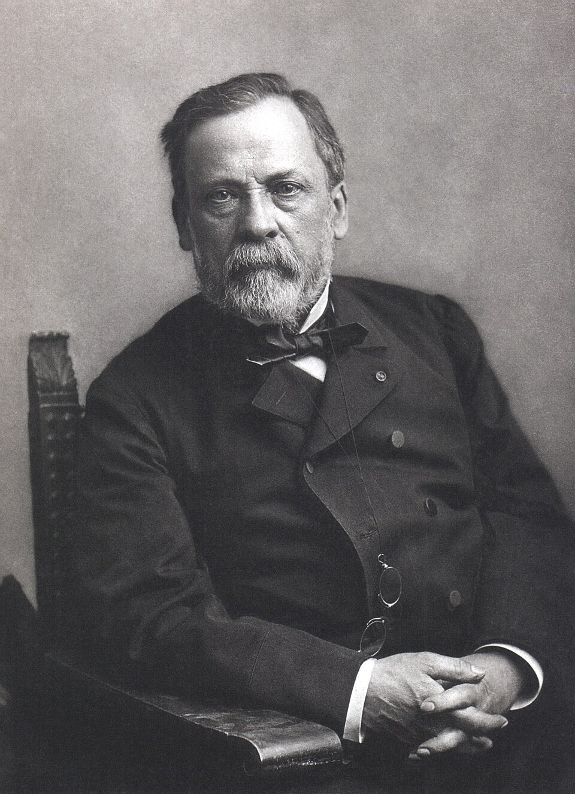

Pasteur inocula por primera vez su vacuna contra la rabia a un niño mordido
Joseph Meister, de nueve años, mordido catorce veces por un perro rabioso en Alsacia, recibió esta tarde en París la primera inyección del método con que el sabio ha librado de la rabia a medio centenar de perros. Nadie sobrevive a la rabia declarada; el señor Pasteur apuesta a llegar antes que ella.

A las ocho de esta tarde, en el laboratorio de la calle de Ulm, un niño de nueve años llamado Joseph Meister recibió bajo la piel el contenido de una jeringa: médula de conejo muerto de rabia, secada durante quince días hasta casi extinguir su virulencia. Es la primera vez que el método del señor Luis Pasteur contra la rabia se ensaya en un ser humano. El niño llegó esta mañana de Alsacia con su madre: el sábado, camino de la escuela, un perro rabioso lo derribó y lo mordió catorce veces en manos, piernas y muslos, con heridas tan crueles que un médico del lugar hubo de cauterizarlas doce horas después. El perro, muerto a tiros por su dueño, tenía el vientre lleno de paja y astillas: rabia sin duda posible.
La rabia es, de todos los males, el de sentencia más segura: puede dormir semanas o meses en la herida, pero una vez declarada —la sed con horror al agua, las convulsiones, la furia— no ha perdonado jamás a un enfermo, y la medicina no tiene contra ella más que el hierro candente aplicado a tiempo, y la esperanza. Justamente esa lentitud es la rendija por donde Pasteur se propone entrar: si el mal tarda tanto en llegar al cerebro, cabe adelantársele, fortificando al mordido con virus cada vez menos debilitados, hasta hacerlo inexpugnable antes de que la enfermedad estalle. En perros, el laboratorio lo ha logrado ya decenas de veces.
El hombre que arriesga hoy su nombre no es médico, y sus adversarios no dejarán de recordarlo: es químico, el mismo que mostró que los fermentos son seres vivos, que salvó a los gusanos de seda de Francia y que venció al carbunclo de las ovejas en el ensayo público de Pouilly-le-Fort. Al arte de proteger dando la enfermedad en pequeño lo llama vacunación, palabra que él mismo quiso hacer general en homenaje a aquella vacuna del doctor Jenner contra la viruela, de la que este diario dio cuenta hace casi un siglo. Pero una cosa es vacunar antes del contagio, y otra, como hoy, correr una carrera contra un veneno que ya está adentro.
El sabio, cuentan los del laboratorio, pasó el día en una angustia que no mostraba ante la madre. Consultó a dos médicos ilustres, el profesor Vulpian y el doctor Grancher, que examinaron al niño y juzgaron que, con catorce mordeduras, la muerte era casi segura si no se intentaba todo; y fue Grancher quien empuñó la jeringa, que Pasteur, sin diploma de médico, no quiso aplicar la inyección por su propia mano. El niño, por su parte, es el menos preocupado de París: lloró un momento por el pinchazo y juega desde entonces en el jardín del laboratorio, entre las jaulas de conejos y gallinas, como en el corral de su casa.
Vienen ahora diez días de inoculaciones cada vez más fuertes, hasta llegar a médulas de virulencia plena; después, semanas de espera que serán las más largas de la calle de Ulm. Si el niño enferma, los adversarios del sabio tendrán su proceso, y acaso también los tribunales; si el niño vive, la palabra rabia habrá dejado de ser una sentencia. Pasteur escribe a los suyos que no duerme, y que sin embargo no podía negarse: la ciencia que no se atreve deja morir con la conciencia tranquila. Quede para los años venideros la cuenta exacta de lo que esta tarde se puso en juego; el cronista anota apenas que la puso un anciano de sesenta y dos años sobre los hombros de un niño de nueve.